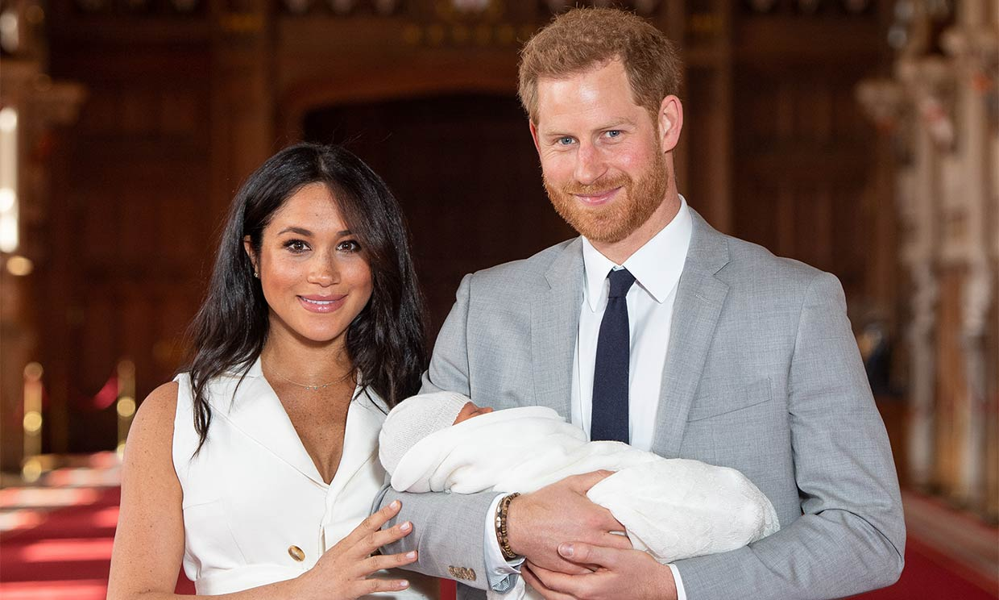
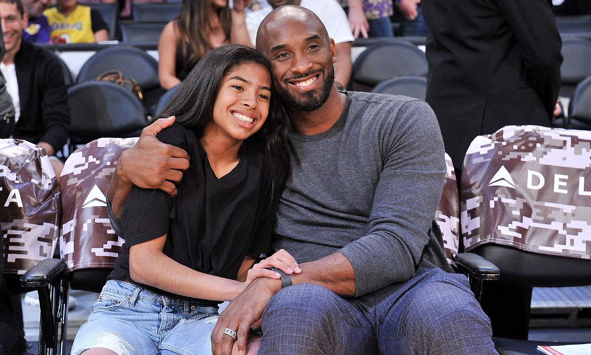

Muerte de Qasem Soleimani
El ataque provocó un amplio rechazo en Irán, cuyo máximo líder, el ayatola Alí Jamenei, prometió una "venganza severa contra los criminales" detrás del "martirio" de Soleimani. Las autoridades iraníes no detallaron el tipo de represalias que planean tomar o cuándo, pero varios países de Medio Oriente, desde Israel, hasta Irak y Arabia Saudita pusieron sus tropas en alerta ante posibles ataques.
Aunque en la horas posteriores al ataque no había sido publicado un recuento oficial de las víctimas ni la identidad de la mayoría, reportes de inteligencia citados por varios medios estadounidenses y del mundo árabe los cifran entre seis y siete. Además de Soleimani, Irán confirmó también el deceso de Abu Mahdi al Muhandis, jefe adjunto de las Fuerzas de Movilización Popular de Irak, una milicia apoyada por Teherán. La televisión estatal iraní informó que tres de los muertos eran militares de la Guardia Nacional Revolucionaria, mientras The New York Times señaló que también se encontraban miembros de la milicia iraquí que se encargaban de la protección del militar iraní. Al Arabiya, por su parte, indicó que también estaban funcionarios libaneses de Hezbolá que acompañaban en su viaje a Soleimani.
La operación militar de EE.UU. en Irak tiene lugar tras crecientes tensiones en los últimos días entre Washington e Irán. Un contratista estadounidense murió cerca de Kirkuk, Iraq, la semana pasada y cuatro miembros del ejército resultaron heridos en un ataque por el que EE.UU. responsabilizó a Irán y a Soleimani. "Él había orquestado ataques contra las bases de la coalición en Irak en los últimos meses, incluido el ataque del 27 de diciembre, que culminó con una muerte y heridas a personal estadounidense e iraquí", indicó el Pentágono en el comunicado sobre la operación. Según The Washington Post, fue este hecho el que llevó a que se comenzara a discutir un ataque, pero días más tarde, en la víspera de Año Nuevo miembros de la milicia apoyada por Teherán asediaron la embajada de Estados Unidos en Bagdad. Esto, según los medios de Estados Unidos, no solo habría llevado a la decisión de desplegar efectivos a la región, sino que también decidió el contraataque.
Video sobre la operaciónIncendios de Australia
Desde septiembre de 2019, los incendios impactaron fuertemente varias regiones del estado de Nueva Gales del Sur, como la costa norte, la región Hunter, Hawkesbury y Wollondilly en el extremo oeste de Sídney, las Montañas Azules, Illawarra y la costa sur, con más de 200 focos en todo el país. En el este y noreste de Victoria, grandes áreas forestales ardieron sin control durante cuatro semanas antes de que los incendios surgieran de los bosques a fines de diciembre, cobrando vidas, amenazando muchas ciudades y aislando a Corryong y Mallacoota. Se declaró el estado de desastre para East Gippsland.15 Se produjeron incendios importantes en Adelaide Hills e Isla Canguro en Australia del Sur. Las áreas moderadamente afectadas fueron el sudeste de Queensland y el sudoeste de Australia occidental, así como partes de Tasmania y del Territorio de la Capital Australiana que se vieron levemente afectadas. El humo de los incendios llegó hasta Nueva Zelanda y alcanzó las zonas polares, donde se tiñó de amarillo, además de derretir los casquetes polares. Se solicitaron refuerzos de toda Australia para ayudar a combatir los incendios y aliviar a los equipos locales en Nueva Gales del Sur. El 11 de noviembre la Autoridad de Bomberos del Estado de Victoria (CFA) envió un gran contingente de hasta 300 bomberos y personal de apoyo para ayudar.16 A mediados de noviembre de 2019, más de 100 bomberos fueron enviados desde Australia Occidental.17 También se enviaron contingentes desde Australia del Sur y el Territorio de la Capital Australiana.1617 El 12 de noviembre, el Gobierno de Australia anunció que la Fuerza de Defensa Australiana proporcionaría apoyo aéreo para extinguir de incendios, además de prepararse para proporcionar mano de obra y apoyo logístico.1819 Los bomberos de Nueva Zelanda, Estados Unidos y Canadá ayudaron a combatir los incendios, especialmente en Nueva Gales del Sur.
El 17 de enero de 2020 una serie de tormentas empezaron a desarrollarse en la mitad sur de Australia, brindando un alivio a los bomberos que luchaban contra el fuego. Sin embargo, muchos incendios continuaban activos en otras zonas del país.
Video de los incendiosEl príncipe Harry y Meghan Markel renuncian a los privilegios de la realeza
Verificado “Después de muchos meses de reflexión y discusiones internas, hemos elegido hacer una transición este año para comenzar a forjar un nuevo papel progresivo dentro de esta institución. Tenemos la intención de dar un paso atrás como miembros “mayores” de la Familia Real y trabajar para ser financieramente independientes, sin dejar de apoyar plenamente a Su Majestad la Reina. Es con su aliento, particularmente en los últimos años, que nos sentimos preparados para hacer este ajuste. Ahora planeamos equilibrar nuestro tiempo entre el Reino Unido y América del Norte, continuando honrando nuestro deber hacia La Reina, la Commonwealth y nuestros patrocinios. Este equilibrio geográfico nos permitirá criar a nuestro hijo con una apreciación de la tradición real en la que nació, al tiempo que brinda a nuestra familia el espacio para centrarse en el próximo capítulo, incluido el lanzamiento de nuestra nueva entidad caritativa. Esperamos compartir los detalles completos de este emocionante próximo paso a su debido tiempo, mientras continuamos colaborando con Su Majestad la Reina, El Príncipe de Gales, El Duque de Cambridge y todas las partes relevantes. Hasta entonces, acepte nuestro más sincero agradecimiento por su continuo apoyo. ”- El duque y la duquesa de Sussex
El príncipe Harry y su esposa Meghan Markel anunciaron este miércoles su renuncia a los privilegios de la realiza y su intención de ser financieramente independientes de la corona. “Después de muchos meses de reflexión y discusiones internas, hemos optado por hacer una transición este año… Forjar un nuevo papel progresivo de esta institución”, cita el comunicado. La meta es dejar su posición como “senior” para formar una familia sin apoyo económico, renunciando al sueldo que les da la realiza británica. “Tenemos la intención de dar un paso atrás como miembros ‘senior’ de la Familia Real y trabajar para ser financieramente independientes, mientras continuamos apoyando plenamente a Su Majestad la Reina”, agrega el documento. Ambos, planean radicar un tiempo en los Estados Unidos y alternarse con el Reino Unido para darle a sus hijos una apreciación distinta de la tradición real.

China identifica nuevo coronavirus como causa de neumonía
Muerte de Kobe Bryant
Video de Lebron James sobre la muerte de Kobe
